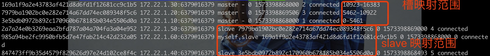

Redis 笔记之十一-集群 Cluster
背景
在 Redis Cluster 方案诞生以前，在 Redis 集群遇到单机资源和流量瓶颈时，有两种常见分布式解决方案：
- 客户端方案：需要自己处理分区逻辑、路由、故障转移（有时候 Routing、LB 和 Failover是同一个问题，都需要通过 routing 技术来切换流量的 endpoint）。
- 代理方案：减轻了客户端的职责和压力，架构上的负担过重。
Redis Cluster 的出现，极大地降低了架构师的负担，解放了生产力。
数据分布
数据分布理论
|分区方式|特点|代表产品|取舍逻辑|
|:–:|:–:|:–:|
|哈希分区| 离散度好 数据分布业务无关 无法顺序访问| KV型 Redis Cluster Cassandra Dynamo Elastic Search|如果需要平衡地存储大量数据而只有随机访问其中的若干条，则可以使用简单的哈希分区|
|顺序分区|离散度易倾斜 数据分布业务相关 可顺序访问| 表型 Bigtable HBase Hypertable|如果需要存储大量数据且需要支持区间查找，则也需要使用简单的顺序分区，如果要解决负载均衡的问题可能需要不均匀分片以及分裂和压缩算法的支持|
我们在常规的实践里，随机查找和区间查找的场景同时存在，所以主存储都是按照某个索引顺序存储（MySQL、HBase），再想着怎样使用顺序分区来解决负载均衡（不均衡就会产生倾斜）的问题。而 Dynamo、Cassandra（一个希腊女神的名字）和 Redis用于存储大批量的点状数据为宜。
Redis Cluster 采取哈希分区规则，常见的哈希分区规则有
节点取余
根据固定的数量（区间数）而不只是总数取余是简单的。
使用特定的数据，如 Redis 的键或用户 Id，再根据节点数量 N 使用公式：hash(key) % N（经典的双层 hash），用来决定数据映射到哪一个桶里。这种方案存在一个问题，当节点数量变化时，整个映射关系都要重新计算。
如果使用这种哈希方式，一开始就要规划好分区，保证可以支撑未来一段时间的数据量，扩容时可以天然采用翻倍扩容。
在实践中，如果使用超量部署的方法，一开始就配好 8 个分片或者16个分片，则可能很长时间都不需要扩容-如果扩容也可以使用新建集群的方法，也不需要考虑数据迁移（然后要依赖于 rehash）的问题。预分区的规划很重要。
如果涉及到数据迁移，则需要考虑：
- 新旧分区的资源申请
- 新旧分区的目标分布
- 双写
- 双读
- 停写校验
- 切换读
一致性哈希
一致性哈希（Distributed Hash Table）的实现思路是为系统中每个节点分配一个 token，范围一般在 0~232，这些 token 构成一个 hash 环。数据读写执行查找时，先 hash，然后顺时针（向大数方向）选最近一个 bucket(第一个>= hash value 的token)。

一致性散列的好处在于加入和删除节点只影响哈希环中相邻的节点，对其他节点无影响。但一致性哈希分区存在几个问题：
- 加减节点会造成哈希环中部分数据无法命中（取余分区一样存在这个问题），需要手动处理或者忽略这部分数据，因此一致性哈希常用于缓存场景。
- 当使用少量节点时，节点变化将大范围影响哈希环中数据映射，因此这种方式不适合少量数据节点的分布式方案。
- 普通的一致性哈希分区在增减节点时需要增加一倍或减去一般节点才能保证数据和负载的均衡。
虚拟槽分区
虚拟槽分区兼顾了取余分区和一致性哈希的优点，使用分散度良好的哈希函数把所有数据映射到一个固定范围的整数集合中，整数定义为槽（slot）。这个数一般远大于节点数，比如 Redis Cluster 的槽范围是 0 -16383。槽是集群内数据管理和迁移的基本单位。采用大范围的槽的目的是为了方便数据拆分和集群扩展，每个节点负责一定数量的槽。
Redis 数据分区
slot = crc16(key) * 16383
注意：
- crc16 是一种哈希函数
- 用 * 取余的方法
每个节点负责维护一部分槽以及槽锁映射的键值数据。

Redis 虚拟槽分区的特点：
- 解耦数据和几点之间的关系，简化了节点扩容和收缩难度。如果增加一个节点 6，就需要从节点 1 ~ 5 获得部分 槽 分配到节点 6 上。如果想移除节点 1，需要将节点 1 中的槽移到节点 2 ~ 5 上，然后将没有任何槽的节点 1 从集群中移除即可。由于从一个节点将哈希槽移动到另一个节点并不会停止服务，所以无论添加删除或者改变某个节点的哈希槽的数量都不会造成集群不可用的状态。
- 节点自身维护槽的映射关系，不需要客户端或者代理服务维护槽分区元数据。
- 支持节点、槽、键之间的映射查询，用于数据路由、在线伸缩等场景。
Redis 数据分区限制
- 只允许对映射到同一个 slot 的 key 进行批量操作，如 mget、mset。
- 只支持对映射到同一个 node 的 key 进行事务操作。
- 大数据结构（hash/list）必须映射到同一节点（key 在最小的可分割单位）。
- 不支持多数据空间，只能使用 db0。有了 Redis Cluster，会推动多数据空间消亡。
- 复制结构只支持一层，从节点只能复制主节点。
搭建集群
准备节点
Redis Cluster 至少需要 6 个节点。
开启配置redis-enabled yes。
准备配置文件：
1 | |
要特别注意：
- dir、log 等目录一定要可写。
- cluster-config-file 是会被自动生成的，类似 sentinel 会覆写 sentinel 节点的配置文件。

节点握手
注意，配置文件里并没有指明当前任何节点属于什么集群，这些节点可以手动加入任何集群。
节点握手是指一批运行在集群模式下的节点通过 Gossip 协议彼此通信，达到感知对方的过程。节点握手是集群彼此通信的第一步，由客户端发起命令：cluster meet {ip} {port}。
cluster meet 是一个异步命令，执行后立即返回。内部发起与目标节点进行握手通信：
- 节点1创建节点2的节点信息对象，并发送 meet 消息。
- 节点2接收到 meet 消息后，保存 6379 节点信息并回复 pong 消息。
- 之后节点 6379 和 6380 彼此定期通过 ping/pong 消息进行正常的节点通信。

meet、ping、pong 消息是 Gossip 协议通信的载体。它的主要作用是使节点彼此交换状态数据信息。
使用cluster nodes可以获知当前集群的全貌：
1 | |
其中开头的 40 位 16 进制数是当前集群的节点 id，在节点生成的时候就唯一初始化好了，每次重启都不会变-不同于 runId，runId 每次重启都会变。我们只要在集群内的任意节点上执行 cluster meet命令，握手状态就会通过消息在集群内传播，这样其他节点会自动发现新节点并发起握手流程。
分配槽位
这时候集群只是建立起来，还处于下线状态。直接往任意节点写会出现(error) CLUSTERDOWN Hash slot not served错误。
这时候执行cluster info命令，可以看到
1 | |
cluster_slots_assigned:0意味着当前的集群的槽位没有做过映射，只有节点被分配了槽位，才能响应和这些槽关联的键命令。
首先把所有槽位分配给 3 个节点。
1 | |
这个时候再执行cluster info，则会看到：
1 | |
制造主从结构
这时候把剩下三个节点作为从节点：
1 | |
这时候集群就已经开始各司其职了。


简便方案
下面的命令可以一键生成集群，如果 Redis 版本不够高，就必须使用redis-trib.rb。
1 | |
如果当前节点都位于同一个 host 上，就会报[WARNING] Some slaves are in the same host as their master信息。实际上这些节点都处于一个 docker 集群里，但因为共用了127.0.0.1的地址，触发了反亲和性报错。
广播协议。
共识协议。
发布订阅。
流言协议。
搭建一个集群管理平台要回答好几个问题
- 业务归属地
2.事业群、业务线：这里主要供运维参考，方便集群的运维管理。 - 集群部署位置（几个地域、几个中心）
- 服务等级
- 是否涉及现金交易：如果涉及到支付场景，请与SRE/DBA联系。
- 容量预估：需求容量应该事先评估好，减少后续的扩容次数（扩容过程会不会有数据丢失要看存储方案）。
- 峰值QPS(次/秒)预估
- 读写分布
- 客户端类型：根据实际使用情况进行选择，通常是 Redisson。
- 集群名：应该能准确简介地描述业务的功能或用途。使用“-”分隔（不要出现超过三次），不要出现环境结尾（环境后缀通常会自动被拼进去），不要出现数字。
- 集群描述：详细描述具体使用场景
- 是否持久化：redis集群主要提供的是存储功能。如果仅仅是作为缓存来用，持久化功能可以关闭，关闭了持久化功能的集群可以提供更好的性能。
- 是否可淘汰
- 可运维周期（星期几、是否工作日）。
- 可运维时间（通常是业务低峰期）。
怎样隔离 kv？
制造名字空间。
一种思路是key等于${表名}.${列名}_${version}。每一个 key 要指定类型为好。
- category 表名
- template 列名
- version 是 redis 内部管理的一个数字，如果这个 category 清一次缓存，那么 version 会加1，这样最后的 key 字符串会变成全新的字符串，应用使用新的 key 之后需要重新从数据源加载数据到缓存-这又要引入事件驱动机制。
集群与集群组
在 Set/单元化架构中，一个 cluster group 包含多个 ldc 里的多个 cluster，每个 cluster 服从每个 unit/region/set 的配置。
在 cluster group 里对 category 进行操作最终会同步到各个 cluster 上。
集群的辅助服务
- Redis-Keeper 集群间数据同步，美团也有自己的 Squirrel-Keeper
- Redis-Migrate 扩容/迁移
- Redis-Web 管理
- Redis-Monitor 监控告警
- Redis-Schedule 调度/运营
- Redis-HA 集群高可用